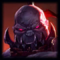
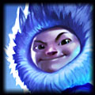
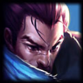
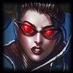
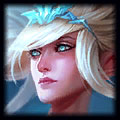

Sain eSports
Founded in 2015, Sain eSports is a professional gaming organization that strives not only to perform at the highest level, but also to sponsor players that truly deserve recognition. With a League of Legends team aiming to qualify in the upcoming North American Challenger Series, the organization is actively seeking passionate gamers who wish to bring their level of play to a professional level. With a competitive CS:GO team on the way, expect to see more of Sain eSports on all fronts of the eSports scene!
News
Sain eSports is happy to announce our new League of Legends Challenger Team! Check out the individual player profiles and bios under the "Teams/Players" tab.
---
The Sain eSports CS:GO General Manager, Cortez, is actively looking for players for our competitive CS:GO team. Please email him at csgo@sain.gg to apply. Please include your rank, username, CEVO profile link and efficacy (if applicable), ESEA profile link and RWS (if applicable), Skype username, and any other notable information.
Teams
|  |
CcWiN Top Lane Known for both his tanks and carries, CcWiN can adapt to Meta shifts requiring him to play teamfighters, splitpushers, or even supportive toplaners. Internally referenced as the “King of Solo-kills” there is rarely a game where he hasn’t snowballed off of his opponent. |
|  |
MaGeRdAnGeR Jungle Potentially the most consistent player on the roster, MaGeR has proven himself to be a high-caliber jungler with a diverse champion pool. Although he is exceptionally proficient at tanky, peeling junglers, he isn’t afraid to play whatever is required to win. Even if it’s Nidalee. |
|  |
Sazuya Mid Lane One of the Top 20 Diana players in the world, and a terrifying Challenger Yasuo carry, Sazuya brings a unique aggression and champion pool to the midlane that both compliments his teammates’ play styles and forces opponents to stay alert. |
|  |
Prototype AD Carry Previously the AD-Carry for the NACS team Final Five, Prototype brings both talent and experience to the Sain eSports League of Legends roster. Prototype is known for his choice to bring exhaust on AD-Carries, as well as being one of the top Vayne players in North America. |
|  |
Whyin Support Althought being the youngest player on the roster, Whyin has shown that he is not only proficient in his role, but also has a cool head, maintaining composure within the team and keeping them on track. |
Substitutes: Kinoscorpia and Flamboozle.
Support Staff:
Cory "eSports Manager" Solowsky: General Manager
Amol "Indian" Bhatia: Head Coach
Ian Preschel: Player/Sports Psychologist
Media
Sponsors / Affiliates
Contact
Robert "Sain" Murray, Owner and CEO: admin@sain.gg
Christopher "MoreSarcasm" Vickery, Tech Lead: tech@sain.gg
Cory "eSports Manager" Solowsky, League of Legends Manager: league@sain.gg
Ryan "Cortez" Fino, CS:GO Manager: csgo@sain.gg